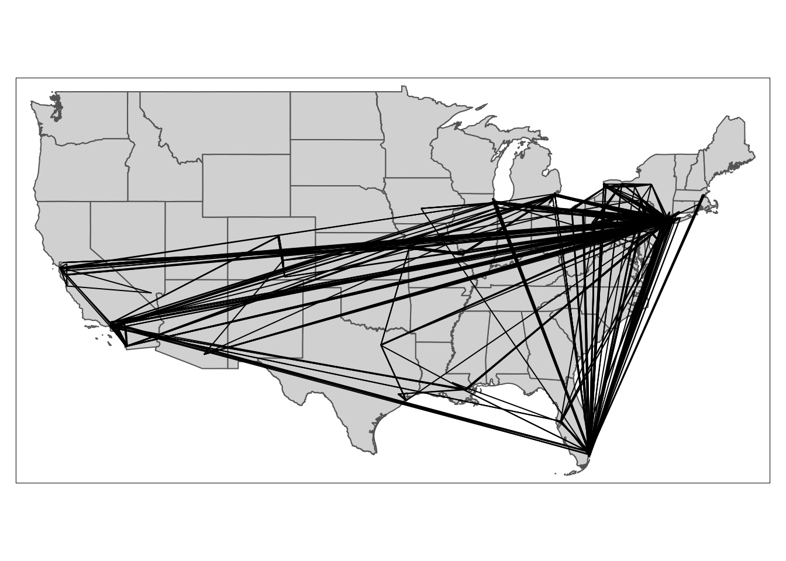
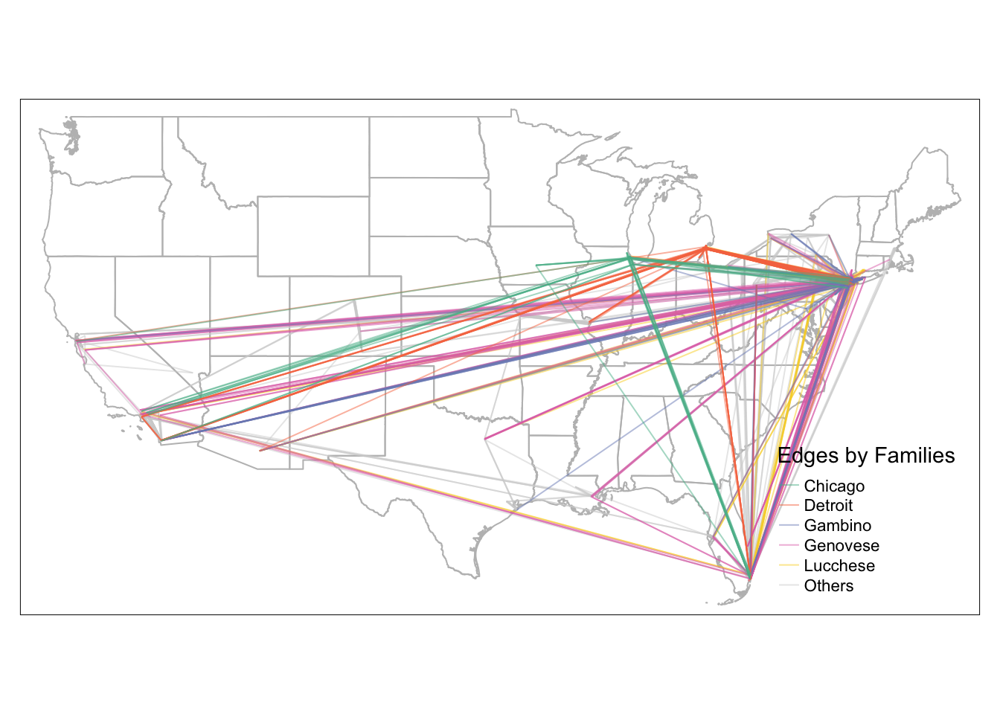

Chapter 4 Visualizing Edges
In this chapter, we continue to use the American Mafia data introduced in Chapter 2.
This chapter covers the following topics:
- How to convert point data into line geometry
- How to visualize edges with constant color and size
- How to visualize edges with varying edge width by attributes
- How to visualize edges with varying edge color by attributes
- How to visualize edges with varying edge size and edge color with a combined legend
You will be able to find a copy of all the codes at the bottom of the page.

Before proceeding to the codes, please load the following packages:
library(sf) #for using spatial objects
library(tidyverse) #for using tidy syntax
library(tmap) #for visualizing maps
library(tigris) #for downloading TIGER boundary shapefiles
library(stplanr) #for using od2line function to convert points to lines
library(igraph) #for calculating node degree
library(SSNtools) #load sample datasets MafiaNodes and MafiaEdges4.1 Convert Points into Lines
4.1.1 Method 1: Use od2line function in stplanr package.
od2line takes in two arguments: 1) an OD dataframe that assumes the first two column contains the origin and destination variables, and 2) a shapefile that can be matched to the origin and destinations. In our case, the first dataframe is MafiaEdges, and the second is MafiaNodes converted into an sf geometry object. This method is particularly useful if you stores your OD dataframe and your shapefile separately. This is also the easiest way for our dataset to convert into lines. The only downside is that you have one more package dependency. We encourage readers to explore other useful OD-related functions in the stplanr package, such as dist_google(), od_coords2line(), od_to_odmatrix() and so on.
#library(SSNtools)
#library(tidyverse)
#library(stplanr)
data(MafiaNodes)
data(MafiaEdges)
# convert MafiaNodes to an sf geometry object (shapefile)
MafiaSpatial = MafiaNodes %>%
st_as_sf(coords=c("LonX", "LatY"), crs = 4326)
# create line geometry
MafiaEdges_toLine = od2line(MafiaEdges, MafiaSpatial)
# print first three rows
MafiaEdges_toLine[c(1:3),]## Simple feature collection with 3 features and 2 fields
## Geometry type: LINESTRING
## Dimension: XY
## Bounding box: xmin: -80.1252 ymin: 25.9783 xmax: -73.9652 ymax: 40.7449
## Geodetic CRS: WGS 84
## Source Target geometry
## 1 CARUSO-FRANK LISI-GAETANO LINESTRING (-74.0049 40.613...
## 2 LANSKY-MEYER GAMBINO-CARLO LINESTRING (-80.1252 25.978...
## 3 CARUSO-FRANK DIMAGGIO-ROSARIO LINESTRING (-74.0049 40.613...4.1.2 Method 2: Group by lineID and Summarize Points into Line
The second one is to group the points coordinates by line ID, summarize the geometry (you can also flow values in the same statement if available), and then use st_cast in the sf package to turn the grouped point coordinates into a line geometry. This method is particularly useful if your points are organized by line ID and if you do not want to use extra packages. It is also convenient for visualizing GPS trajectory data because each row tends to be a point data associated with a line ID and you want to connect all the points that represent one trajectory.
For our data, we do not have line ID for points, but for demonstration purpose, we can create such ID with row_number(). Then we use pivot_longer() in tidyr package (loaded with tidyverse) to transform one row of edge to two rows of edge points and show what the data look like. Noted that multiple mafia members in MafiaNodes have the same locations and are connected. They cannot form lines. Thus we remove them in the codes.
#library(SSNtools)
#library(tidyverse)
#library(sf)
data(MafiaNodes)
data(MafiaEdges)
# convert MafiaNodes to an sf geometry object (shapefile)
MafiaSpatial = MafiaNodes %>%
st_as_sf(coords=c("LonX", "LatY"), crs = 4326)
# transform MafiaEdges to a format where each node in the edge is coded with an edge ID
MafiaEdges2 = MafiaEdges %>% mutate(ID = row_number()) %>%
pivot_longer(cols = c("Source", "Target"), names_to = "type", values_to = "NODE") %>%
left_join(MafiaSpatial, by=c('NODE'), copy=FALSE)
# print first three rows of the data
MafiaEdges2[c(1:3),]## # A tibble: 3 × 7
## ID type NODE Family NY NiceLabel geometry
## <int> <chr> <chr> <chr> <int> <chr> <POINT [°]>
## 1 1 Source CARUSO-FRANK Genovese 2 Frank Caruso (-74.0049 40.6133)
## 2 1 Target LISI-GAETANO Lucchese 2 Gaetano Lisi (-73.9908 40.7142)
## 3 2 Source LANSKY-MEYER Genovese 1 Meyer Lansky (-80.1252 25.9783)# convert points to lines
MafiaEdges_toLine = MafiaEdges2 %>%
group_by(ID) %>%
# this is an optional step to remove points that are at the same location;
filter(n_distinct(geometry) > 1) %>%
st_as_sf() %>%
group_by(ID) %>%
summarise() %>%
st_cast("LINESTRING")
MafiaEdges_toLine[c(1:3),]## Simple feature collection with 3 features and 1 field
## Geometry type: LINESTRING
## Dimension: XY
## Bounding box: xmin: -80.1252 ymin: 25.9783 xmax: -73.9652 ymax: 40.7449
## Geodetic CRS: WGS 84
## # A tibble: 3 × 2
## ID geometry
## <int> <LINESTRING [°]>
## 1 1 (-74.0049 40.6133, -73.9908 40.7142)
## 2 2 (-80.1252 25.9783, -73.9652 40.595)
## 3 3 (-74.0049 40.6133, -73.985 40.7449)4.1.3 Method 3: Join Two Point Geometry into One Row and Unite into Line
The third way to convert points into lines is to join two point geometry in one row and cast them into a line. This method is particularly useful if you have coordinates of both origin and destination points in one dataframe. In our case, we do not have coordinates, so we have to join MafiaNodes to get the geometries to use this method.
#library(SSNtools)
#library(tidyverse)
#library(sf)
data(MafiaNodes)
data(MafiaEdges)
# attach point geometry to MafiaEdges for both Source and Target nodes
MafiaEdges_toLine = MafiaEdges %>%
left_join(MafiaNodes, by=c('Source' = 'NODE'), copy=FALSE) %>%
left_join(MafiaNodes, by=c('Target' = 'NODE'), copy=FALSE) %>%
#LonX.x and LatY.x are coordinates for Source;
#LonX.y and LatY.y are coordinates for Target
select(c(Source, Target, LonX.x, LatY.x, LonX.y, LatY.y)) %>%
# this is an optional step to remove points that are at the same location
filter(LonX.x != LonX.y & LatY.x != LatY.y)
# this helper function converts a row with four coordinates into a
# two by two matrix and cast it into a linestring.
st_segment = function(r){st_linestring(t(matrix(unlist(r), 2, 2)))}
# loop through each row and cast it into a linestring
MafiaEdges_toLine$geometry = st_sfc(
sapply(1:nrow(MafiaEdges_toLine),
function(i){
st_segment(MafiaEdges_toLine[i,][c('LonX.x', 'LatY.x', 'LonX.y', 'LatY.y')])},
simplify=FALSE))
# ensure the output is an sf object and set the crs
MafiaEdges_toLine = MafiaEdges_toLine %>% st_as_sf() %>% st_set_crs(4326)
MafiaEdges_toLine[c(1:3),]## Simple feature collection with 3 features and 6 fields
## Geometry type: LINESTRING
## Dimension: XY
## Bounding box: xmin: -80.1252 ymin: 25.9783 xmax: -73.9652 ymax: 40.7449
## Geodetic CRS: WGS 84
## Source Target LonX.x LatY.x LonX.y LatY.y
## 1 CARUSO-FRANK LISI-GAETANO -74.0049 40.6133 -73.9908 40.7142
## 2 LANSKY-MEYER GAMBINO-CARLO -80.1252 25.9783 -73.9652 40.5950
## 3 CARUSO-FRANK DIMAGGIO-ROSARIO -74.0049 40.6133 -73.9850 40.7449
## geometry
## 1 LINESTRING (-74.0049 40.613...
## 2 LINESTRING (-80.1252 25.978...
## 3 LINESTRING (-74.0049 40.613...4.2 Visualizing Edges
The simplest edge visualization code snippet using tmap is the following:
#library(SSNtools)
#library(tidyverse)
#library(sf)
#library(tmap)
#library(tigris)
# prepare data
data(MafiaNodes)
data(MafiaEdges)
# convert coordinates to sf point geometries
MafiaSpatial = MafiaNodes %>%
st_as_sf(coords=c("LonX", "LatY"), crs = 4326)
# convert point geometries to lines
MafiaEdges_toLine = od2line(MafiaEdges, MafiaSpatial)
# states is a function in tigris to download U.S. state boundary shapefile
us_states = states(cb=TRUE, progress_bar = FALSE) %>%
filter(!STUSPS %in% c('PR','AS', 'AK', 'GU','MP','VI', 'HI'))
# tmap functions to visualize maps
tmap_mode('plot')
tm_shape(us_states) +
tm_polygons() +
tm_shape(MafiaEdges_toLine) +
tm_lines()
4.3 Visualizing Edges by Line Width
To visualize edges by line width, we added a column variable weight for line width in tm_lines().
# create a line weight column based on edge distance
MafiaEdges_toLine = MafiaEdges_toLine %>% mutate(weight = as.numeric(st_length(geometry)))
#library(tmap)
tmap_mode('plot')
tm_shape(us_states) +
tm_polygons(alpha=0, border.col = 'grey') +
tm_shape(MafiaEdges_toLine) +
#define line width with column `weight` and properties associated with lines
tm_lines(lwd='weight', scale=2, alpha=0.2, legend.lwd.is.portrait = TRUE,
title.lwd = c('Distance (m)')) +
tm_layout(legend.position = c('right', 'bottom'))
The default line width setting is proportional to the column variable (in this case, weight values). In reality, the degree weight distribution of non-planar networks is often skewed, with a few edges have very high weights or flow values and most of the rest have low values. Therefore, we need to adjust the breaks to better visualize the SSN network.
To adjust the line width breaks, we need to create a column to store relative edge width, which is similar to the node size visualization in chapter 2. We chose a skewed quantile breaks for line width. This step is quite manual for line width aesthetics, and better supported for color aesthetics. The upcoming tmap v4 will have significant improvements on the ease of use.
# We create a column called flow_breaks that stores relative line width
brks = round(quantile(MafiaEdges_toLine$weight, probs=c(0, 0.5, 0.9, 0.99, 1)), 0)
MafiaEdges_toLine = MafiaEdges_toLine %>% mutate(
line_width = case_when(
weight >= brks[1] & weight <= brks[2] ~ 0.1,
weight > brks[2] & weight <= brks[3] ~ 0.3,
weight > brks[3] & weight <= brks[4] ~ 0.5,
weight > brks[4] & weight <= brks[5] ~ 1
)
)
tmap_mode('plot')
tm_shape(us_states) +
tm_polygons(alpha=0, border.col = 'grey') +
tm_shape(MafiaEdges_toLine) +
#define line width with column `weight` and properties associated with lines
tm_lines(lwd='line_width', scale=2, alpha=0.2,
legend.lwd.is.portrait = TRUE,
lwd.legend = c(0.1, 0.3, 0.5, 1)*2,
lwd.legend.labels=c('0-14','14-1630','1630-4000','4000-4150'),
title.lwd = c('Distance (km)')) +
tm_layout(legend.position = c('right', 'bottom'))
4.4 Visualizing Edges by Color
To visualize edges by color, we assign the variable column weight to argument col in tm_lines. Since we already established that the edges are better viewed through a skewed flow breaks, we manually assign break values for color. To do that, we give argument breaks a vector of fixed numbers, and set argument style to fixed. The following map has constant line width across different colors.
tmap_mode('plot')
tm_shape(us_states) +
tm_polygons(alpha=0, border.col = 'grey') +
#reorder edges so that long distance edges are drawn first and short-ranged edges drawn last
tm_shape(arrange(MafiaEdges_toLine, desc(weight))) +
#define line color with column `weight` and properties associated with lines
tm_lines(col='weight', scale=2, alpha=0.2,
breaks = round(quantile(MafiaEdges_toLine$weight, probs=c(0, 0.5, 0.9, 0.99, 1)), 0),
style="fixed", n = 4,
labels=c('0-14','14-1630','1630-4000','4000-4150'),
palette=c('#CCEBC5', '#7BCCC4', '#2B8CBE', '#094081'),
title.col = c('Distance (km)')) +
tm_layout(legend.position = c('right', 'bottom'))
We can also visualize lines by color based on a categorical variable, such as mafia families. To create assign a categorical value to each edge, we identified the top 5 mafia families with the most number of members. They are ‘Genovese’, ‘Lucchese’, ‘Gambino’, ‘Detroit’, and ‘Chicago’. If an edge is affiliated with one of the top 5 mafia families, it will be joined with the respective mafia family name. Otherwise, it will has the value Others. The biggest difference with the codes above is to change style = 'fixed' to style = 'cat' in tm_lines() and change the color palette to represent categorical colors.
top_5 = c('Genovese', 'Lucchese', 'Gambino', 'Detroit', 'Chicago')
MafiaNodes = MafiaNodes %>% mutate(Family = ifelse(Family %in% top_5, Family, 'Others'))
MafiaEdges_toLine = MafiaEdges_toLine %>%
left_join(MafiaNodes %>% select(c(NODE, Family)), by=c('Source' = 'NODE'), copy=FALSE) %>%
left_join(MafiaNodes %>% select(c(NODE, Family)), by=c('Target' = 'NODE'), copy=FALSE) %>%
#the two left join above will automatically create Family.x and Family.y to differentiate having `Family` twice.
mutate(edge_family = ifelse(Family.x %in% top_5, Family.x, 'Others')) %>%
mutate(edge_family = ifelse(Family.y %in% top_5, Family.y, edge_family))
tmap_mode('plot')
tm_shape(us_states) +
tm_polygons(alpha=0, border.col = 'grey') +
tm_shape(arrange(MafiaEdges_toLine, desc(edge_family))) +
tm_lines(col='edge_family', style='cat', alpha=0.5, lwd=1,
palette=c('#57B897', '#F7774F', '#7A8CC1', '#E072B5', '#FAD324', 'lightgrey'),
title.col = c('Edges by Families'),
legend.position = c('right', 'bottom'))
4.5 Visualizing Edges by Width and Color
Similar to node visualization, to visualize edges with both line width and color, we need to add arguments for both and create a combined legend through tm_add_legend. Unfortunately, the package does not have an automatic way to combine color and line width legend together, so we have to define the values manually.
tmap_mode('plot')
map = tm_shape(us_states) +
tm_polygons(alpha=0, border.col = 'grey') +
#reorder edges so that long distance edges are drawn first and short-ranged edges drawn last
tm_shape(arrange(MafiaEdges_toLine, desc(weight))) +
tm_lines(
#arguments that define the styles for color
col="weight", alpha=0.2,
breaks = round(quantile(MafiaEdges_toLine$weight, probs=c(0, 0.5, 0.9, 0.99, 1)), 0),
style="fixed", n = 4,
palette=c('#CCEBC5', '#7BCCC4', '#2B8CBE', '#094081'),
legend.col.show = FALSE,
#arguments that define the styles for line width
lwd='line_width', scale=2,
legend.lwd.show = FALSE
) +
#add manual legends to combine color and line width schema
tm_add_legend(
type=c('line'),
col=c('#CCEBC5', '#7BCCC4', '#2B8CBE', '#094081'),
lwd=c(0.1, 0.3, 0.5, 1)*2,
labels=c('0-14','14-1630','1630-4000','4000-4150'),
title='Distance (km)') +
tm_layout(legend.position = c('right', 'bottom'))
map
Perfect! Now we can would like to add nodes with size scaled by their degree. Here we show a new technique, which is to save the map we already plotted as a variable map above, and add new components to it. In this way, we do not have to regenerate the portion of the map that we already produced and speed up the mapping and testing time dramatically!
#library(igraph)
g = graph_from_data_frame(MafiaEdges, directed = FALSE, vertices=MafiaSpatial)
MafiaSpatial$degree = degree(g)
map = map +
tm_shape(MafiaSpatial) +
tm_symbols(size="degree", scale=2, #scale up the node size
col='orange', border.col='darkorange',
alpha=0.2, border.alpha = 0.2,
title.size=c('Degree'))
map
To export the tmap object into a local folder, you can add:
tmap_save(map, filename='YOUR_LOCAL_FOLDER_PATH/map.png')Here is the full code to replicate the map above
library(sf)
library(tidyverse)
library(tmap)
library(tigris)
library(stplanr)
library(igraph)
data(MafiaNodes)
data(MafiaEdges)
# convert MafiaNodes to an sf geometry object (shapefile)
MafiaSpatial = MafiaNodes %>%
st_as_sf(coords=c("LonX", "LatY"), crs = 4326)
# create line geometry
MafiaEdges_toLine = od2line(MafiaEdges, MafiaSpatial)
# states is a function in tigris to download U.S. state boundary shapefile
us_states = states(cb=TRUE, progress_bar = FALSE) %>%
filter(!STUSPS %in% c('PR','AS', 'AK', 'GU','MP','VI', 'HI'))
# create weight column for each edge
MafiaEdges_toLine = MafiaEdges_toLine %>% mutate(weight = as.numeric(st_length(geometry)))
brks = round(quantile(MafiaEdges_toLine$weight, probs=c(0, 0.5, 0.9, 0.99, 1)), 0)
# create line_width column for each edge
MafiaEdges_toLine = MafiaEdges_toLine %>% mutate(
line_width = case_when(
weight >= brks[1] & weight <= brks[2] ~ 0.1,
weight > brks[2] & weight <= brks[3] ~ 0.3,
weight > brks[3] & weight <= brks[4] ~ 0.5,
weight > brks[4] & weight <= brks[5] ~ 1
)
)
# create degree column for each node
g = graph_from_data_frame(MafiaEdges, directed = FALSE, vertices=MafiaSpatial)
MafiaSpatial$degree = degree(g)
tmap_mode('plot')
map = tm_shape(us_states) +
tm_polygons(alpha=0, border.col = 'grey') +
#reorder edges so that long distance edges are drawn first and short-ranged edges drawn last
tm_shape(arrange(MafiaEdges_toLine, desc(weight))) +
tm_lines(
#arguments that define the styles for color
col="weight", alpha=0.2,
breaks = round(quantile(MafiaEdges_toLine$weight, probs=c(0, 0.5, 0.9, 0.99, 1)), 0),
style="fixed", n = 4,
palette=c('#CCEBC5', '#7BCCC4', '#2B8CBE', '#094081'),
legend.col.show = FALSE,
#arguments that define the styles for line width
lwd='line_width', scale=2,
legend.lwd.show = FALSE
) +
#add manual legends to combine color and line width schema
tm_add_legend(
type=c('line'),
col=c('#CCEBC5', '#7BCCC4', '#2B8CBE', '#094081'),
lwd=c(0.1, 0.3, 0.5, 1)*2,
labels=c('0-14','14-1630','1630-4000','4000-4150'),
title='Distance (km)') +
tm_shape(MafiaSpatial) +
tm_symbols(size="degree", scale=2, #scale up the node size
col='orange', border.col='darkorange',
alpha=0.2, border.alpha = 0.2,
title.size=c('Degree')) +
tm_layout(legend.position = c('right', 'bottom'))
#tmap_save(map, filename='YOUR_LOCAL_FOLDER_PATH/map.png')
map